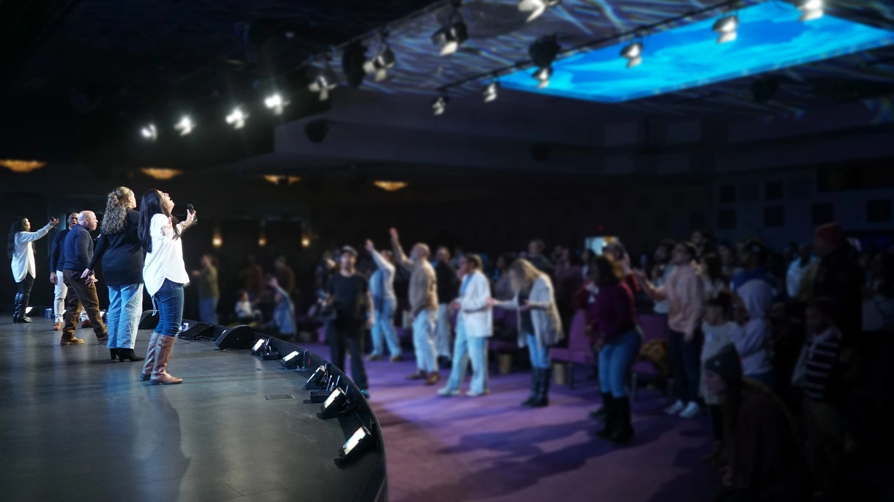
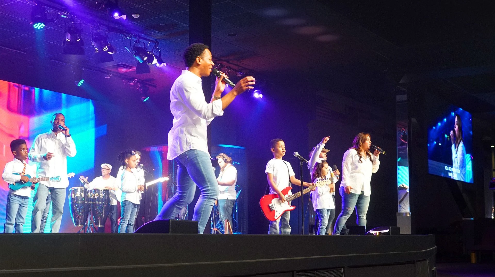
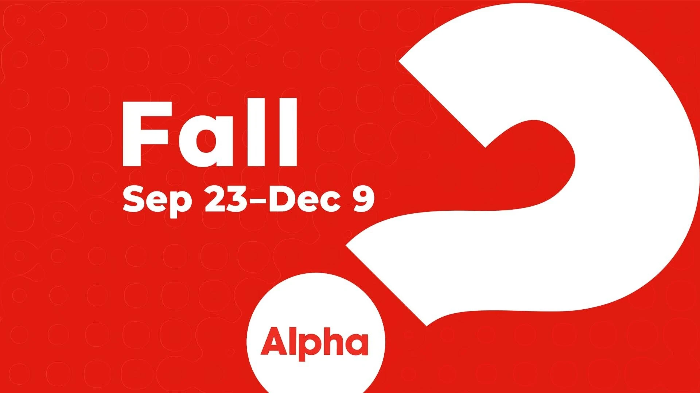

Find a group and make friends who celebrate, support, and encourage you as you follow Jesus every day.
Find a Life GroupI Believe

If this is your first-time commitment, or rededication, congratulations on your decision to follow Jesus! We would love to help you grow as a new believer.
Let us know
Find a group and make friends who celebrate, support, and encourage you as you follow Jesus every day.
Find a Life GroupBaptism is a public way in your spiritual journey to declare your decision as a follower of Jesus.
Get Baptized
Explore life, faith, and meaning. This is more than a course—it's the next step to discover your calling, community, and purpose.
Start Alphawho said to me, “Let us go to the house of the Lord.” // Psalm 122:1
*page under construction*
More guidance is being prepared. The next steps above are available now.

